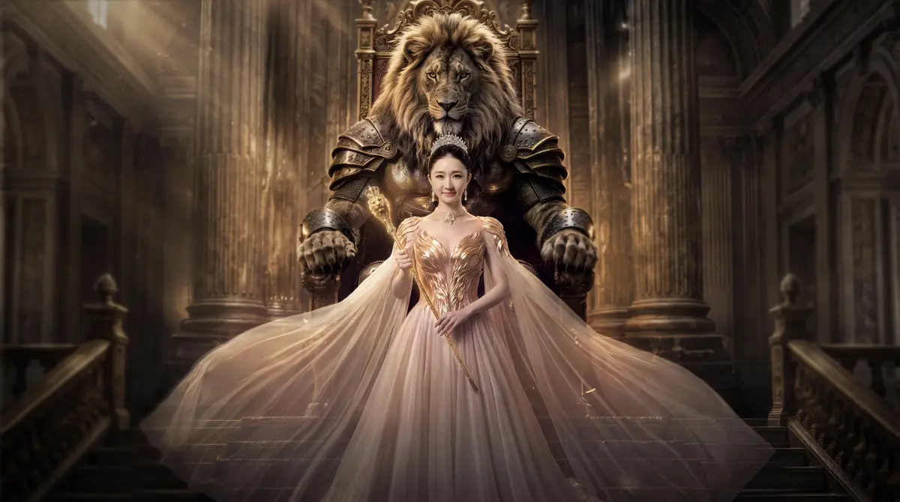
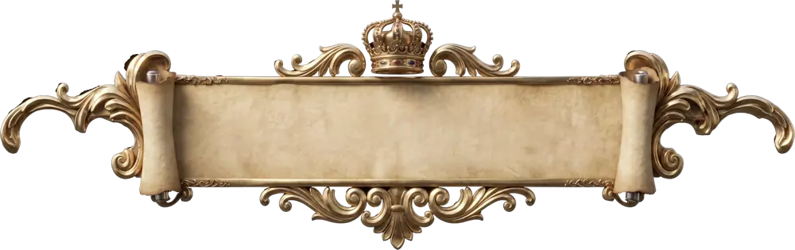

让新门徒被记住
以徐杰与狮王的双主角关系建立师承识别，用冠冕、权杖与战甲明确人物身份的转变。

PROJECT BACKGROUND
围绕徐杰拜师与门徒身份发布，以“狮王授业，门徒出征”为创意主线，将抽象的师徒关系转化为可被看见、理解和记住的成长叙事。
狮王的负伤，解释守护的代价；双手接过权杖，表达传承与责任；战甲觉醒、骑狮出征，完成从被守护者到担当者的转变。
项目以写实 AI 预告与卡通动画正片建立故事世界，再将同一套角色、权杖、勋章和宫殿语言带入真实加冕与点将仪式，串联短视频传播和现场体验。
项目资料所示
传播表现
PROJECT BACKGROUND
辛选以师徒关系建立主播矩阵。[1]2026年4月5日，徐杰正式拜师辛巴；4月7日发布“门徒加冕仪式”视频。徐杰此前已以主播、辛选集团副总裁身份对外亮相。[2]
从设计视角，传播首先要让“辛巴门徒”这一新身份被看见、被理解。难点是把抽象的师徒关系讲成一个有因有果的故事，并让写实预告、卡通动画和真实仪式保持同一套人物、符号与情感逻辑。结合项目素材，创意将这一变化组织为“守护—授业—出征”：解释传承的缘由，呈现责任的交接，再以行动完成新身份的确认。
以徐杰与狮王的双主角关系建立师承识别，用冠冕、权杖与战甲明确人物身份的转变。
通过守护的代价、双手接杖与觉醒出征，把“为什么传承、传承什么”转化为可理解的情感动机。
统一宫殿、勋章、金狮与王座的视觉语言，串联预告、正片、加冕和点将，形成连续的身份发布体验。
以宫殿、狮王与授杖建立世界观，预告门徒身份的诞生。
以五幕成长叙事，完整呈现守护、召唤、授业、觉醒与出征。
将影像中的传承符号落入真实仪式，让身份发布具有见证感。
通过金狮与队列，把承接责任之后的行动转化为传播高潮。
CORE CREATIVE STRATEGY
以“守护—授业—出征”为核心叙事，让师徒关系拥有情感、动作与结果。
狮王的负伤，说明安宁背后的代价。
权杖与勋章的交接，让身份变化拥有明确动作。
从接过责任到带队前行，让成长成为行动。
AI CONTENT COMMUNICATION

01 写实AI预告写实 AI 预告以宫殿、狮王与授杖建立仪式感，先呈现人物与传承关系。
写实静态关键帧
完整故事线：守护 → 召唤 → 授业 → 觉醒 → 复苏与出征
卡通动画分镜
卡通最终成片约 97.8 秒。故事章节按成片内容划分，结尾片尾保留在完整视频中。
STAGE & SPATIAL DESIGN
中轴 · 红毯 · 王座 · 狮首 · 金色材质